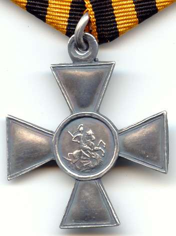
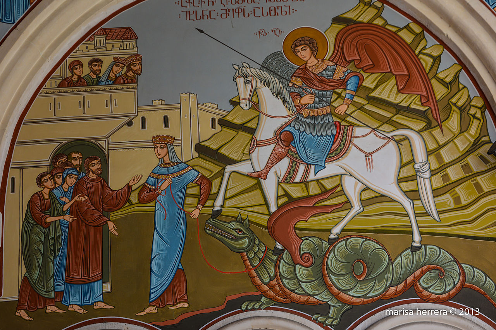
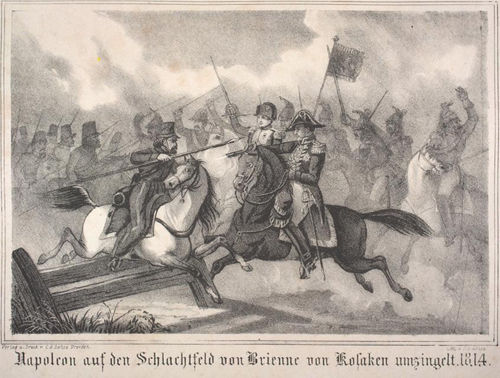
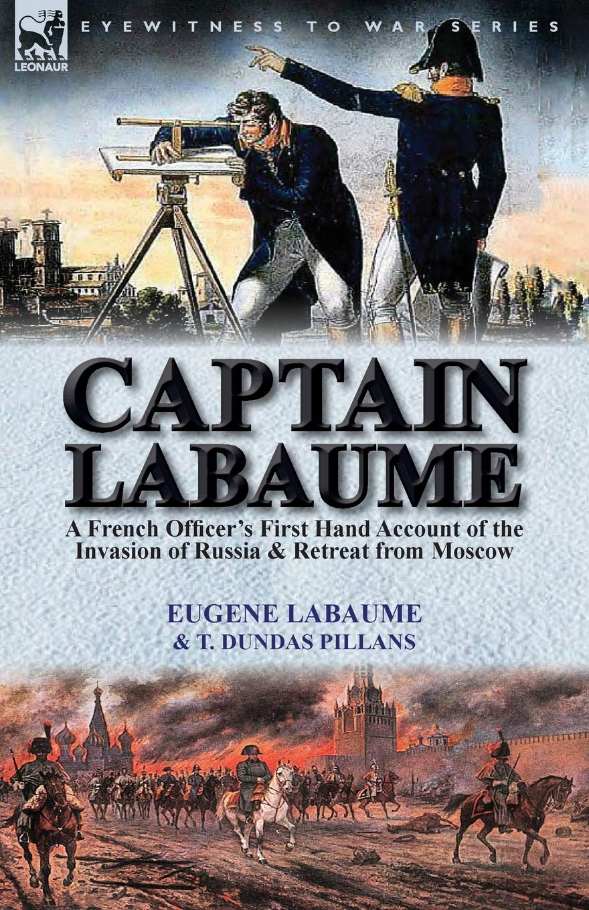

승자와 패자 - 베레지나 에필로그
게시: 2021-10-18T06:30:49+09:00
보통 베레지나 도강은 나폴레옹의 대표적인 패전으로 알려져 있습니다. 그러나 앞서 보셨듯이, 베레지나 도강 작전은 분명히 나폴레옹의 전략적 승리라고 할 수 있습니다. 나폴레옹은 탈출하는 것이 목적이었고 쿠투조프는 그것을 막아야 하는 입장이었는데, 모든 상황은 나폴레옹에게 절망적이었는데도 나폴레옹은 그의 잔존 병력 대부분을 이끌고 성공적으로 탈출했으니까요. 나폴레옹에 대해 신랄한 비판을 아끼지 않던 프로이센 출신의 전략가 클라우제비츠도 베레지나 도강에 대해서는 모든 악조건을 극복하고 이루어낸 나폴레옹의 성공적인 작전이라고 극찬했습니다. 더구나 베레지나의 동서쪽에서 벌어진 물리적 전투에서도 그랑다르메가 모두 전술적 승리를 거두었습니다. 이 모든 것은 나폴레옹과 그의 휘하 원수들의 뛰어난 리더쉽 덕분이었습니다. 전쟁터는 사소한 것으로도 삶과 죽음이 갈리는 험악한 곳인데, 베레지나에서 나폴레옹과 그랑다르메의 잔존 부대가 목숨을 건질 수 있었던 것은 에블레가 챙긴 연장과 이동식 대장간 마차 덕분이었습니다. 어떻게 생각하면 모든 것을 나폴레옹의 운이 좋아서 그랬다고 볼 수도 있습니다. 그러나 애초에 나폴레옹이 폐기를 명령했던 그런 자질구레한 연장까지 능동적으로 판단하여 챙기는 에블레를 공병대 사령관으로 임명한 것 자체가 나폴레옹의 평소 공정한 실력 위주의 인사정책의 결과였습니다. 치차고프가 나폴레옹의 얄팍한 기만 전술에 어이없게 속아넘어간 것도 그저 운의 문제는 아니었습니다. 그런 기만 전술에 동원된 프랑스군 부대의 이름 없는 장교가 '이 동네 수다쟁이는 유태인 상인들'이라는 것을 잘 파악하고 그 유태인 상인들을 상대로 정말 열심히 연기를 잘 해낸 것이 1차 수훈갑이었는데, 그것도 우수한 인재를 임관시켰던 나폴레옹, 더 나아가 신분제를 벗어던진 프랑스의 새로운 체제 덕분이라고 할 수 있습니다. 반면에, 스투지엔카에서 네덜란드 부교병들이 다리를 만들고 있는 것을 직접 목격한 러시아 대위가 '스투지엔카가 진짜 도강 지점'이라고 반복해서 보고를 올려도 무시되는 러시아군 지휘부는 이번에도 한계를 드러냈습니다. 그럼에도 불구하고, 베레지나 작전의 최대 승자는 바로 쿠투조프였습니다. 그는 집요하다 싶을 정도로 꾸물거려서 결국 베레지나 작전에는 전혀 참여하지 않았고 덕분에 나폴레옹이라는 대어를 놓쳤음에도 불구하고, 베레지나로 대표되는 나폴레옹의 몰락을 이끌어낸 수훈갑으로 인정되었습니다. 그가 나폴레옹과의 직접 대결을 회피하려고 일부러 느리게 움직인 것인지는 불분명하지만, 나폴레옹을 잡기 위해 서두르지 않은 것은 확실합니다. 그리고 그가 여태까지 그랑다르메 잔존 부대의 숨통을 끊는 것을 거부한 이유가 이 베레지나 전투를 통해 옳은 판단이었음이 어느 정도 입증되었다고 할 수 있습니다. 그렇게 약화되었음에도 불구하고, 그랑다르메의 각부대는 놀라울 정도로 사기충천한 모습으로 잘 싸웠고, 서둘러 긁어모은 러시아군은 그 상대가 되지 못한다는 것이 드러났던 것입니다. 물론 현장의 러시아 장군들은 그런 쿠투조프 때문에 복장이 터질 지경이었고, 짜르 알렉산드르도 그런 장군들의 개별 보고를 통해 실제 상황을 잘 알고 있었습니다. 그러나 나폴레옹의 패퇴에 따른 국민적 사기 진작을 위해서는 누군가 영웅이 필요했고, 러시아군의 총사령관인 쿠투조프 이외에는 달리 대안을 찾을 수 없었던 알렉산드르는 그에게 결국 러시아 최고 무공 훈장인 성 게오르그 십자장(Георгиевский крест, St. George cross)을 수여할 수 밖에 없었습니다. 막말로, 러시아 국민들에게 '나폴레옹이 진 것은 영웅적인 러시아군 덕분이 아니라 나폴레옹에게 효과적인 수송 수단이 없어서 진 거에요'라고 공고를 할 수는 없었으니까요.

(로마자로 쓴 러시아어로는 Georgiyevskiy krest (게오르기옙스키 크레스트)인 러시아 최고의 무공훈장 성 게오르그 십자장입니다. 공산 정권 때는 제정 러시아의 잔재라고 폐지되었다가 1992년 다시 부활되어 지금도 수여되는 무공 훈장입니다.)

(성 게오르그는 3세기 경의 게오르기오스(Geórgios)라는 이름의 그리스계 로마 군인으로서 기독교를 버리라는 디오클레티아누스 황제의 칙령을 거부한 죄로 순교했습니다. 성 게오르그는 소아시아 지역인 카파도키아에서, 인신 공양을 요구하는 용을 죽였다는 전설로 유명하며 대표적인 군인 성자로 알려져 있습니다. 지금은 이름을 조지아로 바꾼 그루지아의 국가명도 이 성인으로부터 나왔다는 설이 있습니다.) 반면, 베레지나 최악의 패배자는 치차고프였습니다. 그는 나폴레옹 탈출의 모든 책임을 뒤집어 썼습니다. 사실 전투에서 그랑다르메를 격파하지 못한 것은 비트겐슈타인도 마찬가지였고, 특히 비트겐슈타인은 베레지나 서쪽으로 이동하여 나폴레옹의 퇴각을 요격하라는 쿠투조프의 명령을 의도적으로 거부한 죄가 있었는데도 비트겐슈타인에 대해서는 비난이 상대적으로 덜했습니다. 나폴레옹의 앞길에 서있었음에도 나폴레옹의 기만 전술에 놀아나 길을 비켜준 치차고프의 잘못이 상대적으로 더 컸기 때문이었습니다. 치차고프는 엄청난 비난을 받았고 결국 망명하다시피 유럽으로 떠났으며, 죽을 때까지 러시아로 돌아오지 못했습니다. 이후 러시아 어린이들은 계속 나폴레옹이 러시아에서 살아돌아갈 수 있었던 것은 모두 치차고프 탓이라고 학교에서 배웠고, 이런 억울한 누명은 1920년대까지 계속 되었습니다. 소비에트 공산정권이 들어선 이후에야 학자들이 꼭 치차고프의 잘못은 아니라는 결론을 냈다고 합니다. 그러나 누가 뭐라고 해도, 베레지나 최악의 피해자는 낙오병들과 민간 피난민들이었습니다. 약 3만의 낙오병들과 피난민들이 베레지나를 건너지 못했다고 추정되지만 정확한 숫자는 아무도 알 수 없습니다. 11월 27~29일 사이에 베레지나를 건너지 못한 사람들의 수에 대해서는 여러가지 설이 있습니다. 가령 구르고(Gaspard Gourgaud)의 지나치게 미화된 기록에 따르면 2천 명의 낙오병과 3문의 대포만 베레지나 동편에 남았습니다만, 라봄(Eugène Labaume) 대위의 수기에 따르면 약 2만의 인원과 2백문의 대포가 버려졌습니다. 아마 진실은 그 중간 어디 즈음이 아닐까 합니다. 치차고프 제독의 보고서에는 전투에서 9천 명이 전사했고 7천 명이 포로로 잡혔다고 되어 있는데, 아마 이게 좀더 사실에 가깝지 않을까 합니다. 현대 사학자들은 대략 이 사흘 동안 나폴레옹은 베레지나 양쪽 강변에서 1만5천의 정규 병력과 1만의 낙오병을 잃은 것으로 판단하고 있는데, 이 중 1/3에서 1/2 정도가 전투에 의해 사상자라고 합니다.

(구르고는 당시 29세의 젊은 참모 장교였습니다. 어려서부터 수학에 소질이 있었던 구르고는 1802년 소위로 임관된 이후 계속 포병 장교로 복무했고 아우스테를리츠에서 부상을 당하기도 했습니다. 그는 러시아 침공을 앞둔 1811년 주요 보급창인 단치히(Danzig)의 시설 점검 보고서를 제출했는데 당시 포병 총감이던 라리봐지에르(Lariboisiere) 장군의 추천과 함께 이 보고서를 읽은 나폴레옹의 눈에 들어 러시아 원정 내내 나폴레옹의 참모진에 소속되어 있었습니다. 특히 1814년 브리엔(Brienne) 전투에서는 코삭들의 기습으로부터 나폴레옹을 구출하여 유명해졌습니다. 그는 백일천하 때 나폴레옹 편에 섰을 뿐만 아니라 세인트 헬레나 섬까지 따라갔고, 1840년에는 나폴레옹의 유해를 송환하기 위해 세인트 헬레나에 파견된 수행단에도 들어갔습니다.)

(라봄(Eugène Labaume)은 원래 지도 전문 장교로서 외젠의 이탈리아군에 배속되어 있던 대위였습니다. 그는 러시아 원정의 시작부터 끝까지의 과정을 모두 경험한 수천명의 생존자들 중 한 명으로서, 그의 수기는 나폴레옹이 세인트 헬레나에서 귀양 생활 중일 때 쓰여졌고 일찍부터 영어로 번역되어 읽혔습니다.) 러시아군의 피해도 적지 않았습니다. 전투에 소극적이었던 러시아군은 가급적 근접전을 꺼리고 원거리 포격전을 벌이려 했지만 쫓기는 입장치고는 부담스럽게 적극적이었던 그랑다르메가 탄약이 떨어지자 총검 돌격까지 감행하는 바람에 약 1만5천의 사상자를 냈습니다. 이건 전투 손실만을 셈한 것이고, 베레지나 강변까지 오느라 역시 힘들었던 러시아군의 비전투 손실까지 합하면 그 피해는 더욱 컸습니다. 한편, 베레지나를 무사히 건넌 약 4만의 그랑다르메는 이제 고생 끝 행복 시작이었을까요? 끝이 다가오고 있다는 것은 확실했지만 그게 꼭 행복의 시작은 아니었습니다. Source : 1812 Napoleon's Fatal March on Moscow by Adam Zamoyski
https://en.wikipedia.org/wiki/Battle_of_Berezina https://de.wikipedia.org/wiki/Schlacht_an_der_Beresina https://www.pinterest.com.au/pin/704813410407128517 https://napoleon1812.wordpress.com/tag/berezina-river/ https://en.wikipedia.org/wiki/Gaspard_Gourgaud https://www.napoleon.org/en/history-of-the-two-empires/articles/general-baron-gaspard-gourgaud-a-survivor-of-st-helena/ https://www.amazon.com/Captain-Labaume-Officers-Account-Invasion/dp/1782822682 https://en.wikipedia.org/wiki/Order_of_St._George https://en.wikipedia.org/wiki/Saint_George